Ediciones pasadas
Un recorrido por la historia de la Competencia Boliviana de Pósters Estadísticos
La competencia se realiza cada dos años. Aquí encuentras el archivo de todas las ediciones anteriores, con sus afiches, criterios, guías y los pósters ganadores por categoría.
4ª · 2024 — 2025
Equipos ganadores:
- Gauss: 1.er lugar, equipo “Doble A” (Alba Alejandra Ortiz Alcocer y Adrián Marcelo Requena Oros); 2.° lugar, “Team medio ambiente forever” (Mishel Diana Flores Urrutia y Herlan David Poroma Alanoca); 3.er lugar, “Los Desvelados” (Carol Katerine Canqui Uturunco y Huáscar Diego Cuentas Ramos). Todos de La Paz.
- Poisson: 1.er lugar, equipo “Georginas” (Santa Cruz).
Pronto publicaremos el afiche y los pósters ganadores de esta edición.
3ª · 2022 — 2023
Premiación el 12 de abril de 2023 en el auditorio del INE, con 9 equipos ganadores en las categorías Bernoulli, Poisson y Gauss. El equipo ganador de Gauss, “Los Embriones” (UMSA), obtuvo el 3.er lugar en la competencia internacional del ISLP 2023 con el póster Explorando la mortalidad infantil en Bolivia y el mundo.
Equipos ganadores:
- Gauss: 1.er lugar, “Los Embriones” (Daniel Linares Terrazas y Edson Loayza Siñani, UMSA); 2.° lugar, “El Grupito” (Maya Alexandra Jurado Veizan y Adriel Rocel Alarcón Gerl, UMSA); 3.er lugar, Índice de violencia contra la mujer en Bolivia (Luz Gabriela Tinta Chura y Herlan Gabriel Callisaya Ramos, UMSA).
- Poisson: 1.er lugar, “Aeternus” (Colegio San Calixto); 2.° lugar, “AJAYU” (U.E. La Paz “A”); 3.er lugar, “Jóvenes dinámicos” (U.E. José Martí).
- Bernoulli: 1.er lugar, “Los pensadores” (Instituto Americano y U.E. de Mallasa); 2.° lugar, “Golden Warriors” (El Alto); 3.er lugar, “Futuro” (U.E. de Mallasa e Instituto Americano).
2ª · 2020 — 2021
Lanzada en noviembre de 2020, en plena pandemia, con talleres gratuitos de análisis de datos y el apoyo del Banco Mundial, la FAO, el INE, la Fundación Aru, R-Ladies La Paz y el Centro de Estudiantes de Estadística de la UMSA. Los pósters se recibieron de noviembre de 2020 a enero de 2021, y la premiación fue virtual, el 16 de abril de 2021. Hubo equipos ganadores de La Paz, Cochabamba y Tarija.
Ver afiche Reglas Criterios Guía Boletín

Ver galería de pósters ganadores
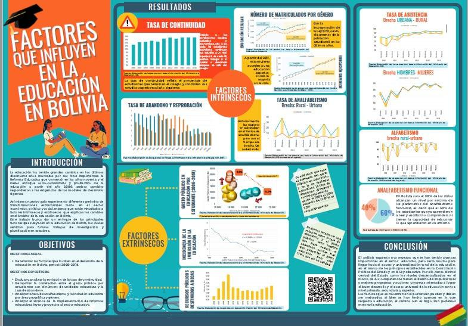
1.er lugar · Gauss
Factores que influyen en la educación en Bolivia
Zulema Quispe, Noemí Condori, Víctor Marca y Ana Carolina Mendoza
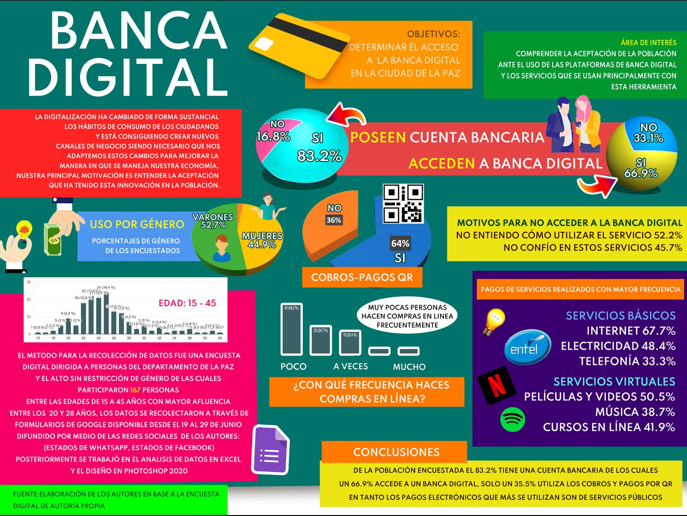
2.° lugar · Gauss
Banca digital
Laskar Israel Quisbert Torrez
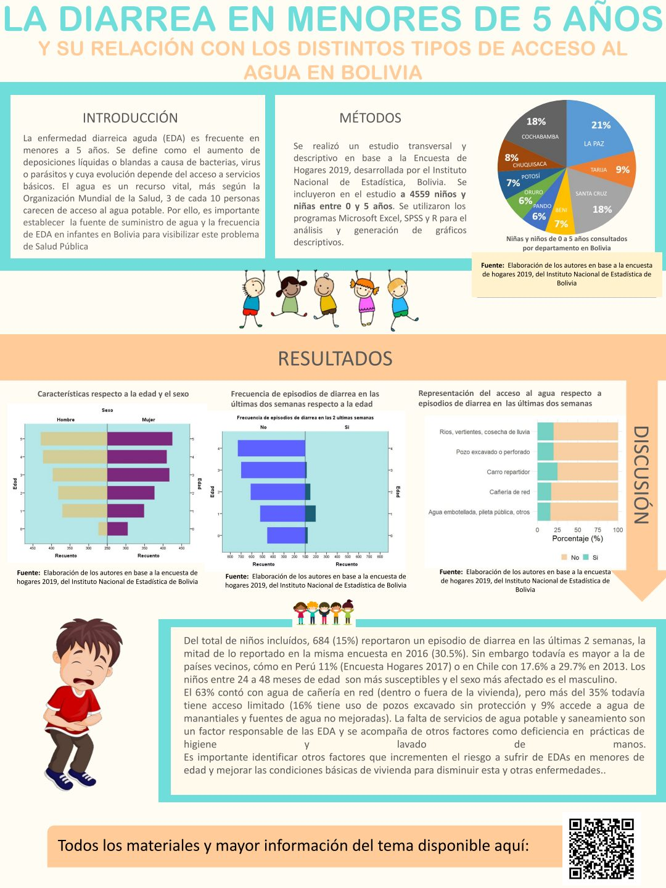
3.er lugar · Gauss
La diarrea en menores de 5 años y su relación con el acceso al agua
Equipo “Hijos de Hipócrates” (UMSS y UMSA)
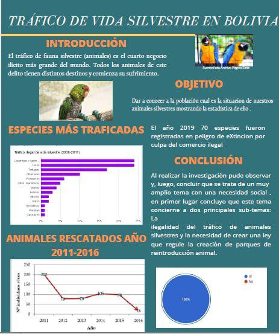
1.er lugar · Poisson
Tráfico de vida silvestre en Bolivia
Equipo “Women in Action” (El Alto)
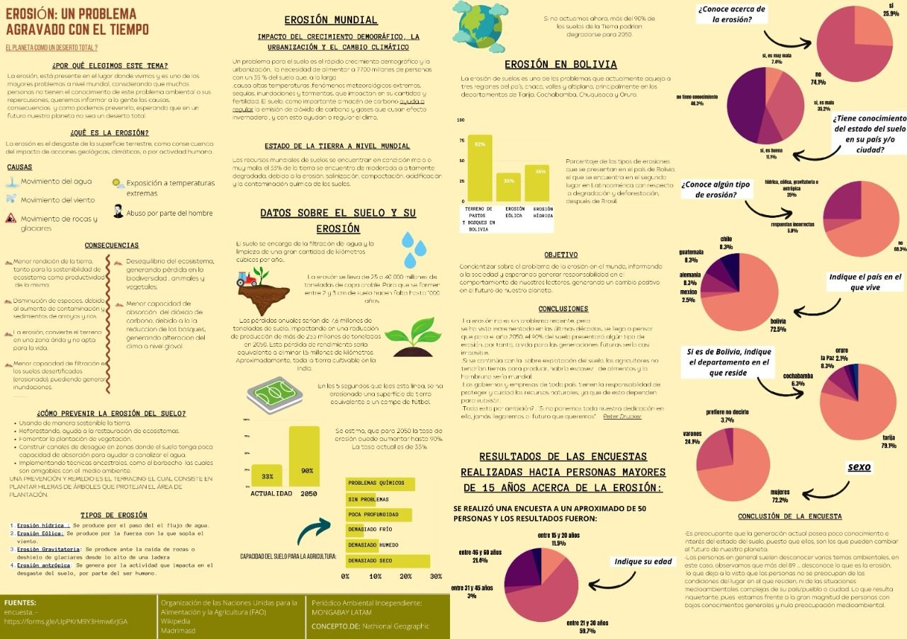
2.° lugar · Poisson
Erosión: un problema agravado con el tiempo
Equipo “Voiles” (U.E. Santa Ana 3, Tarija)
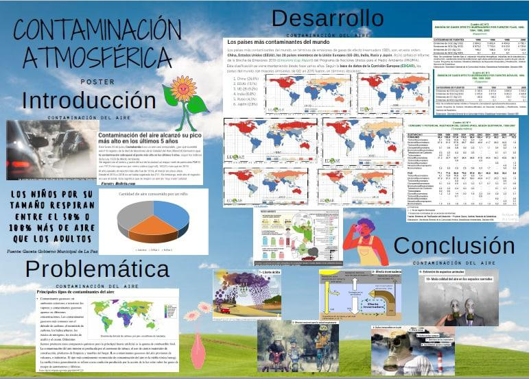
1.er lugar · Bernoulli
Contaminación atmosférica
Equipo “Los protectores del aire” (La Paz)
1ª · 2018 — 2019
Edición inaugural, lanzada el 5 de julio de 2018 en el auditorio del INE por el Instituto Nacional de Estadística y la Fundación Aru. Se recibieron 26 pósters de 97 estudiantes de La Paz y Santa Cruz, en las categorías Bernoulli, Poisson y Gauss. La premiación fue el 15 de abril de 2019, y los primeros lugares representaron a Bolivia en la competencia internacional, cuyos resultados se anunciaron en el 62.° Congreso Mundial de Estadística, en Kuala Lumpur (Malasia), en agosto de 2019.
Ver afiche Guía Boletín de lanzamiento Boletín de premiación

Ver galería de pósters ganadores
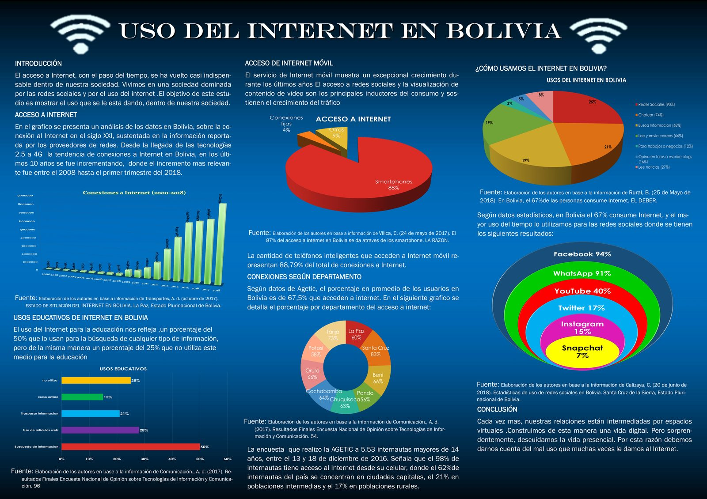
1.er lugar · Gauss
Uso del Internet en Bolivia
Araceli Morales, Edgar Callizaya, Noemí Marani y Juana Poma
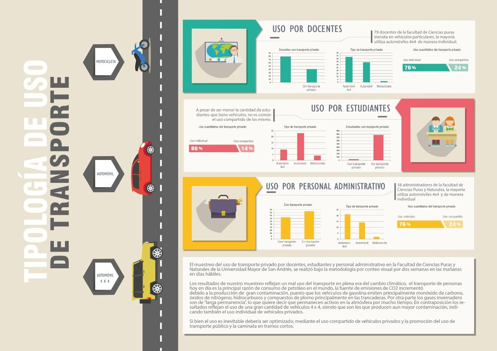
2.° lugar · Gauss
Tipología de uso de transporte
Verónica Guibarra, Selena Ticona y Samantha Cortez
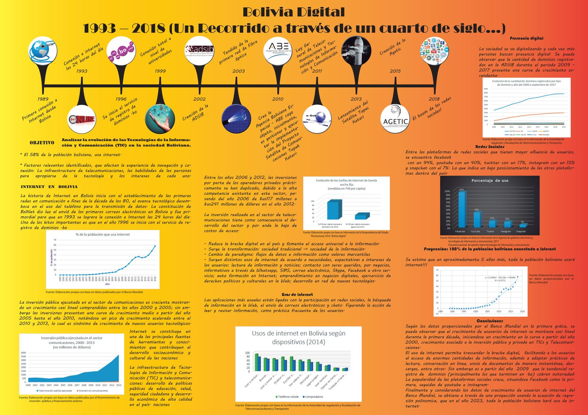
3.er lugar · Gauss
Bolivia Digital 1993–2018
Gabriel Condori y Joseline Villca
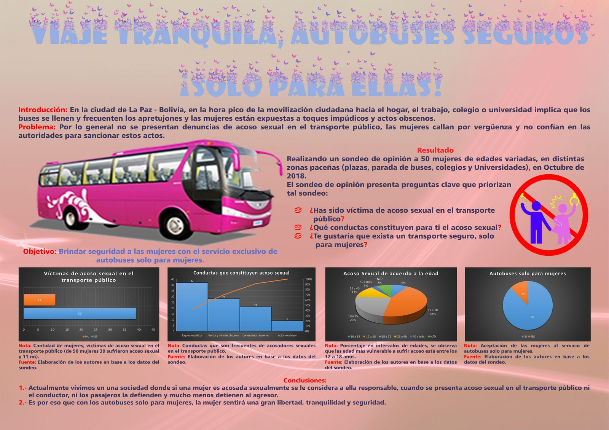
Reconocimiento especial · Gauss
Viaje tranquila, autobuses seguros ¡Solo para ellas!
Erika Huanca, Claudia Pardo, Henry Limachi y Wildo Larico
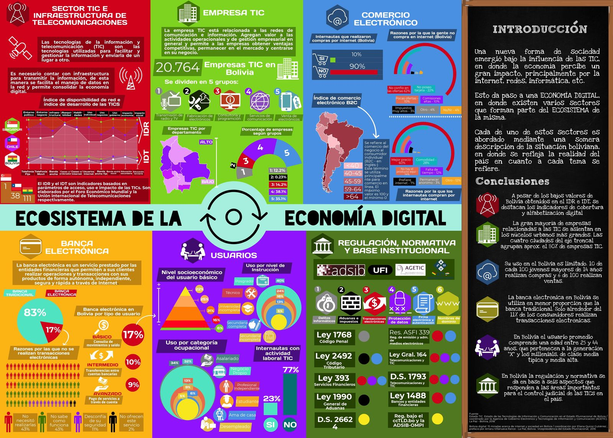
1.er lugar · Poisson
Ecosistema de la economía digital
Benjamín Reydet y Marcelo Fortún
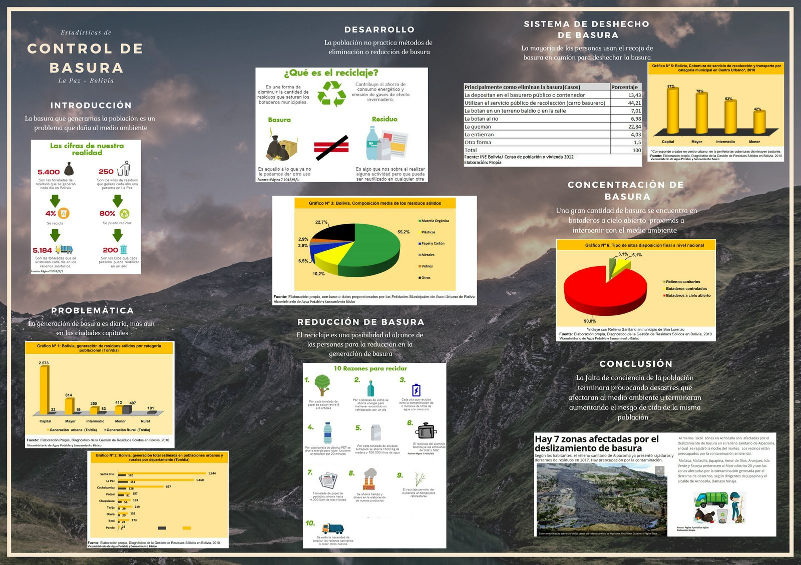
1.er lugar · Bernoulli
Control de basura
Emily Mamani, Eliazarth Inca, Maday Laura y Mishel Mamani
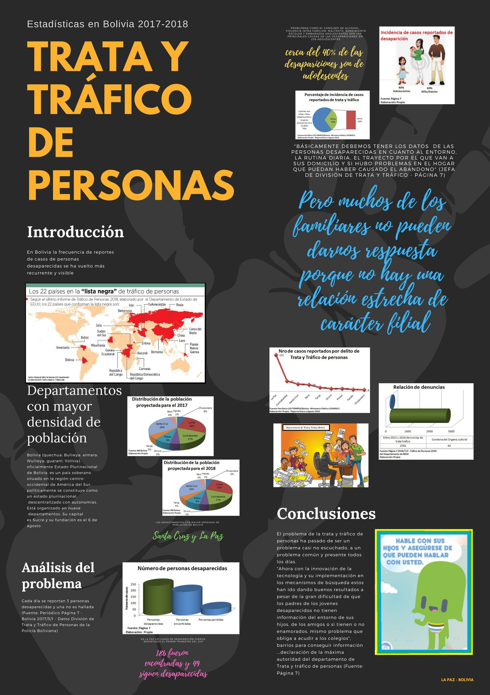
2.° lugar · Bernoulli
Trata y tráfico de personas
Maribel Quispe, Maribel Quispe y María Liz Mena
Pósters bolivianos en la competencia internacional
Para ver los pósters de las competencias internacionales pasadas, visita las páginas oficiales del ISLP: